Show the code
# Données
library(dplyr) # manipulation des données
library(latex2exp)
# Plots
## ggplot
library(ggplot2)
library(gridExtra)Clément Poupelin
Invalid Date
February 27, 2025
METTRE LES REMARQUES
METTRE LES POINTS D’ATTENTION
Résultats
METTRE LES CONCLUSIONS
─ Session info ───────────────────────────────────────────────────────────────
setting value
version R version 4.2.1 (2022-06-23 ucrt)
os Windows 10 x64 (build 22631)
system x86_64, mingw32
ui RTerm
language (EN)
collate French_France.utf8
ctype French_France.utf8
tz Europe/Paris
date 2025-02-27
pandoc 3.2 @ C:/Program Files/RStudio/resources/app/bin/quarto/bin/tools/ (via rmarkdown)
─ Packages ───────────────────────────────────────────────────────────────────
package * version date (UTC) lib source
dplyr * 1.1.4 2023-11-17 [1] CRAN (R 4.2.3)
ggplot2 * 3.5.1 2024-04-23 [1] CRAN (R 4.2.3)
gridExtra * 2.3 2017-09-09 [1] CRAN (R 4.2.1)
latex2exp * 0.9.6 2022-11-28 [1] CRAN (R 4.2.3)
[1] C:/Users/cleme/AppData/Local/R/win-library/4.2
[2] C:/Program Files/R/R-4.2.1/library
──────────────────────────────────────────────────────────────────────────────Nous étudions la différence entre une marche aléatoire et un signal linéaire bruité.
Si on pose que \(x_0 = w_0\), on peut écrire notre marche aléatoire comme \(x_t = \delta t + \sum_{i=0}^{t}w_i\)
# On pose nos paramètres
n = 100
delta = 0.01
# On définis notre fonction de marche aléatoire
random_walk = function(n, delta) {
w = rnorm(n)
drift = delta * seq(1, n)
x = drift + cumsum(w)
return(x)
}
# Générer dix marches aléatoires
nb = 10
sim = matrix(0, ncol = n, nrow = nb)
for (i in 1:nb) {
sim[i, ] = random_walk(n, delta)
}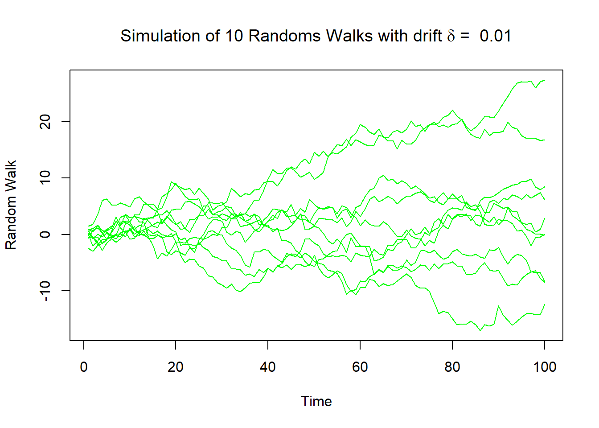
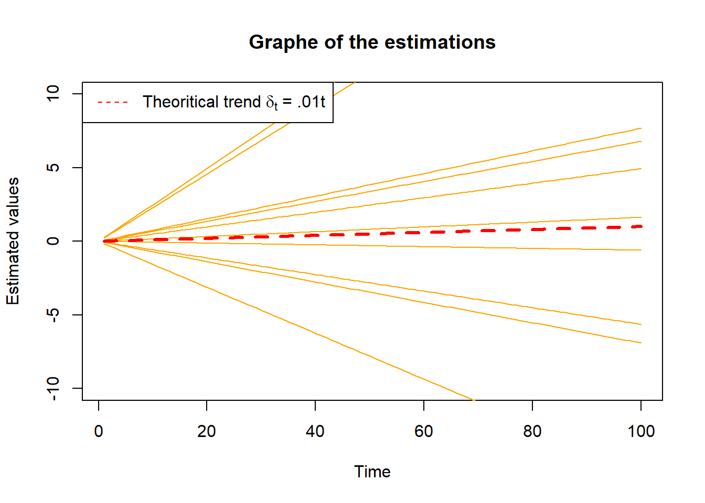
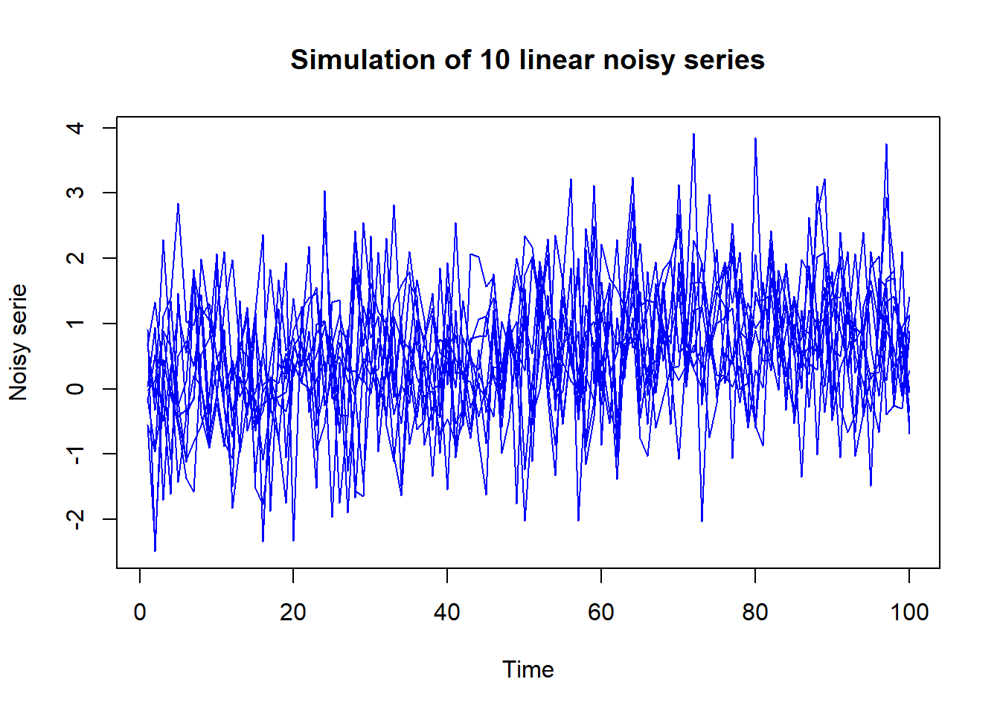
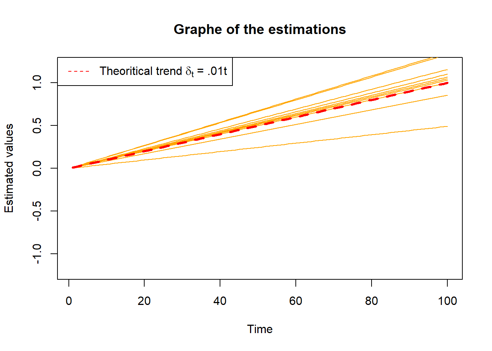
La tendance théorique (le drift) est mieux estimée par régression dans le cas d’un signal bruité que celui de la marche aléatoire.
Cela peut s’explique par le fait que, dans le cas de la marche aléatoire, la variance de \(x_t\) croît linéairement avec le temps. En effet, \(Var(x_t) = Var( \delta t + \sum_{i=0}^{t}w_i) = Var( \sum_{i=0}^{t}w_i)=\sum_{i=0}^{t}Var(w_i) = \sum_{i=0}^{t}\sigma^2_w=t\sigma^2_w\)
Cela fait donc défaut à l’hypothèse d’homoscédacité cruciale pour la régression linéaire
Par contre, du côté du signal bruite on conserve l’homoscédacité avec le cas très idéal du bruit iid et gaussien.
Les paramètres d’entrée de la fonction sont \(n\), \(a\), \(b\), \(w\) et la sortie est une série temporelle. Pour cela, on utilise la fonction ts() qui transforme nos points générés en une série temporelle.
Maintenant, on fixe \(n = 100\) puis \(n = 500\)
Puis on pose les paramètres qui nous serons utiles par la suite
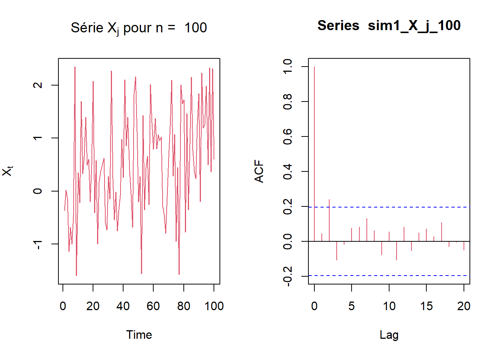
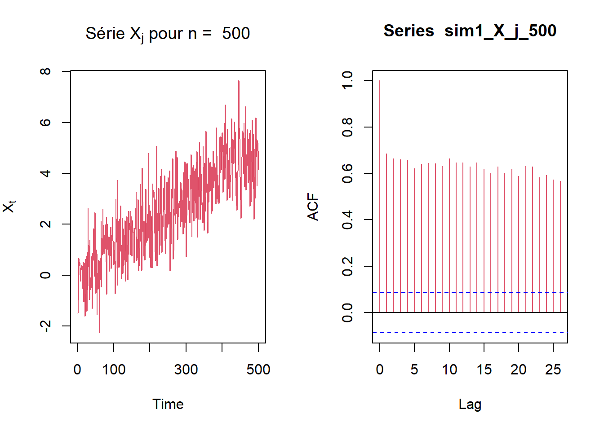
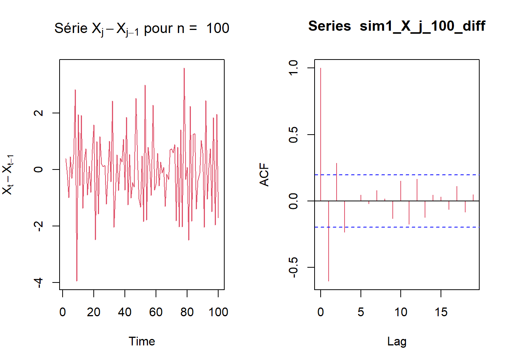
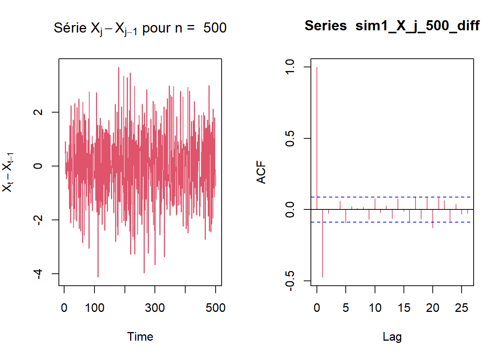
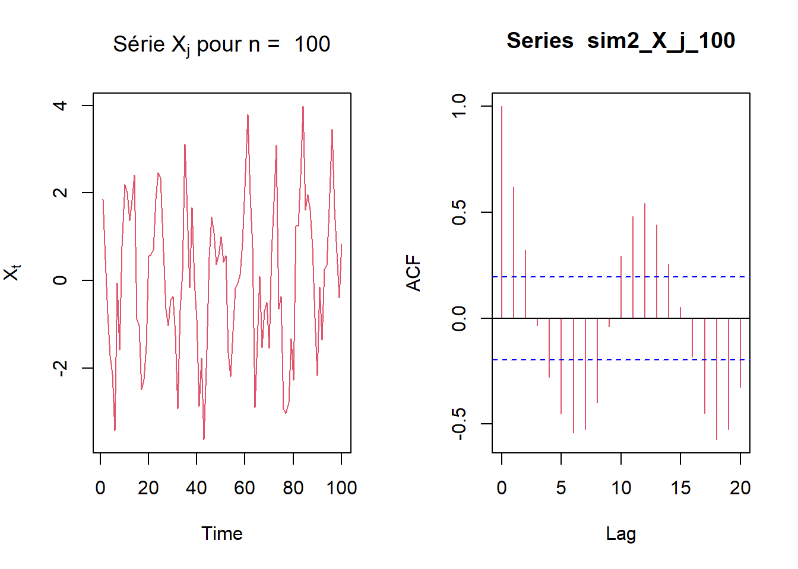
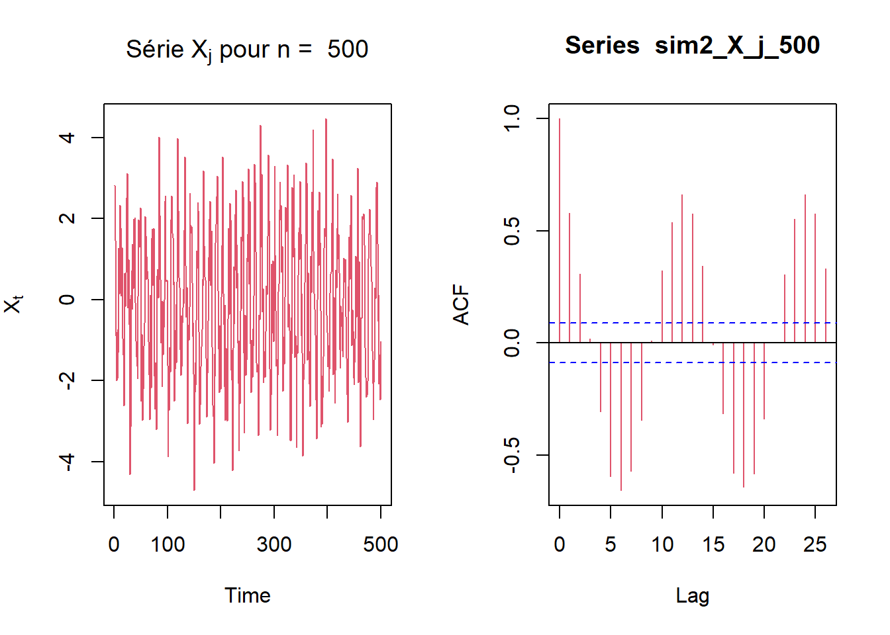
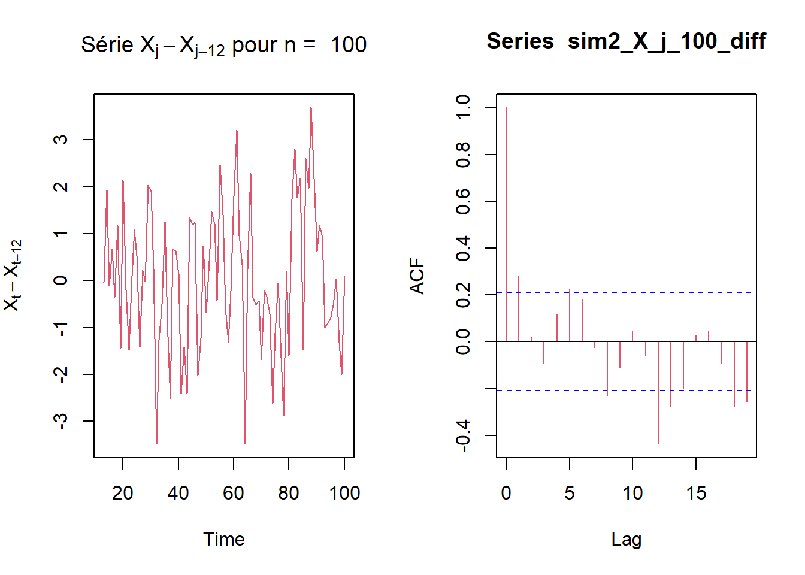
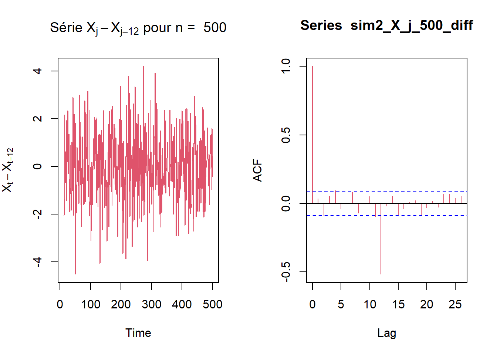
Pour conclure, on peut constater qu’en grandissant l’échantillon, la tendance et la saisonnalité ressortent d’avantage et influencent nos autocorrélation. On ne pourra donc pas considérer les séries comme stationnaires. Mais, l’opération de différenciation peut permettre de résoudre ce problème d’autocorrélation quand celle ci est adaptée à la “perturbation”(tendance ou saison) de notre série.
Pour visualiser cela, on peut effecuer les calculs. Dans le cas de la série \(X_j = 0.01j +\varepsilon_j\) Où il reste l’effet de tendance, \[\begin{align*} X_j - X_{j-1} &= 0.01j +\varepsilon_j - 0.01(j-1) -\varepsilon_{j-1}\\ &= 0.01j - 0.01j - 0.01 + \varepsilon_j - \varepsilon_{j-1}\\ &= -0.01 +\varepsilon_j - \varepsilon_{j-1}\\ \end{align*}\] On a bien une disparition de la tendance.
Dans le cas de la série \(X_j = 2cos(\frac{\pi}{6}j) + \varepsilon_j\) Où il reste l’effet de saison, \[\begin{align*} X_j - X_{j-12} &= 2cos(\frac{\pi}{6}j) +\varepsilon_j - 2cos(\frac{\pi}{6}(j-12)) -\varepsilon_{j-12}\\ &= 2cos(\frac{\pi}{6}j) +\varepsilon_j - 2cos(\frac{\pi}{6}j-\frac{\pi}{6}12) -\varepsilon_{j-12}\\ &= 2cos(\frac{\pi}{6}j) +\varepsilon_j - 2cos(\frac{\pi}{6}j-2\pi) -\varepsilon_{j-12}\\ &= 2cos(\frac{\pi}{6}j) +\varepsilon_j - 2(cos(\frac{\pi}{6}j)cos(2\pi) - sin(\frac{\pi}{6}j)sin(2\pi)) -\varepsilon_{j-12}\\ &= 2cos(\frac{\pi}{6}j) +\varepsilon_j - 2(cos(\frac{\pi}{6}j) - 0) -\varepsilon_{j-12}\\ &= \varepsilon_j -\varepsilon_{j-12}\\ \end{align*}\] On a bien une disparition de la saison.
On a donc qu’une différentiation d’ordre 1 permettra d’enlever la tendance et une différentiation d’ordre \(s\) permettra d’enlever une saison de période \(s\).
Indication : Pour obtenir une série de longueur \(m\), simuler \(m+ 100\) valeurs et supprimer les 100 premières valeurs pour atténuer l’effet de l’initialisation. Vous pouvez utiliser la fonction filter.
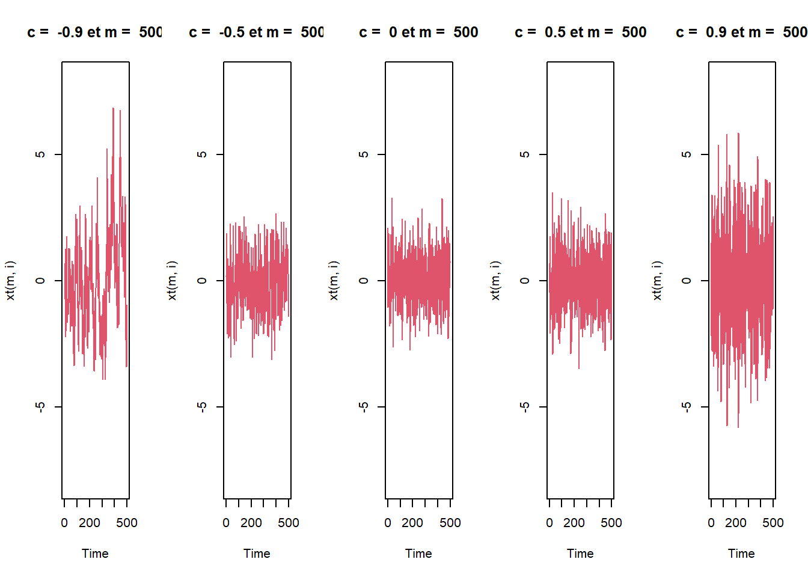
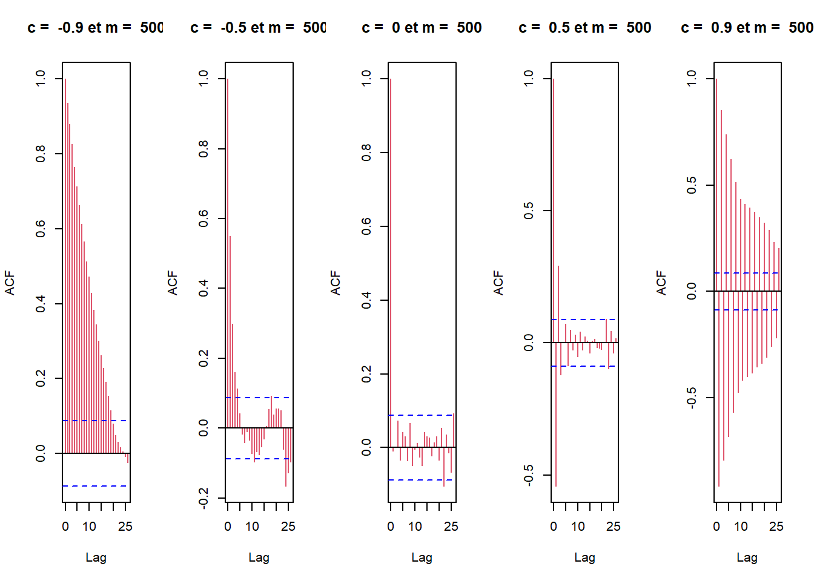
On remarque qu’au moment où nos paramètres sont proche de \(1\) ou \(-1\), nos autocorrélations sont forte et notre série perd en stationnarité. En effet, on remarque que le processus est un AR(1) avec son acf qui décroit exponentiellement et la stationnarité se perd quand \(|c| \longrightarrow 1\).
On remarque également que, qand \(c=0\), on a un bruit blanc.
En Complément de ces informations, on peut aussi s’interesser au PACF
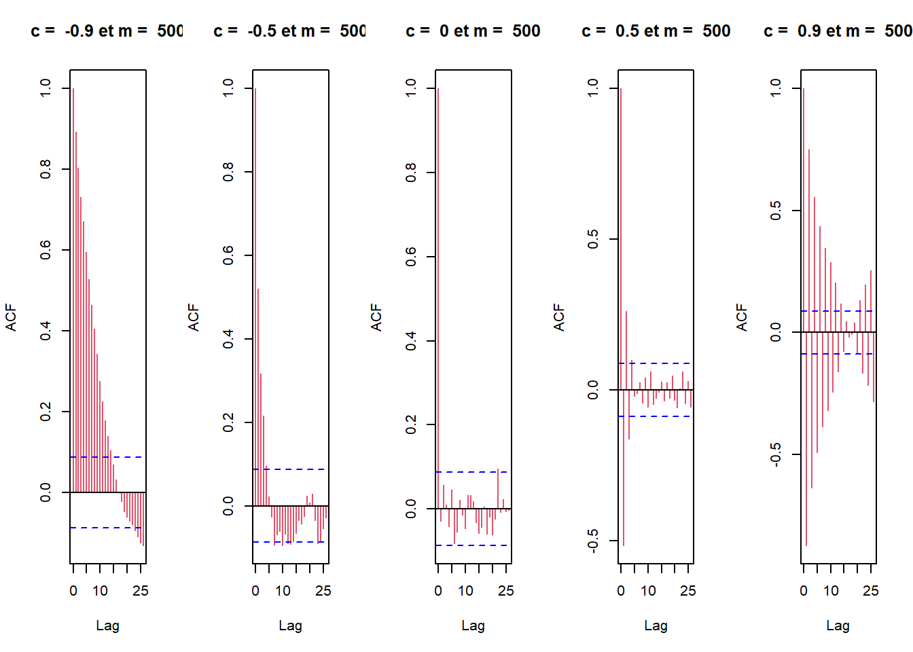
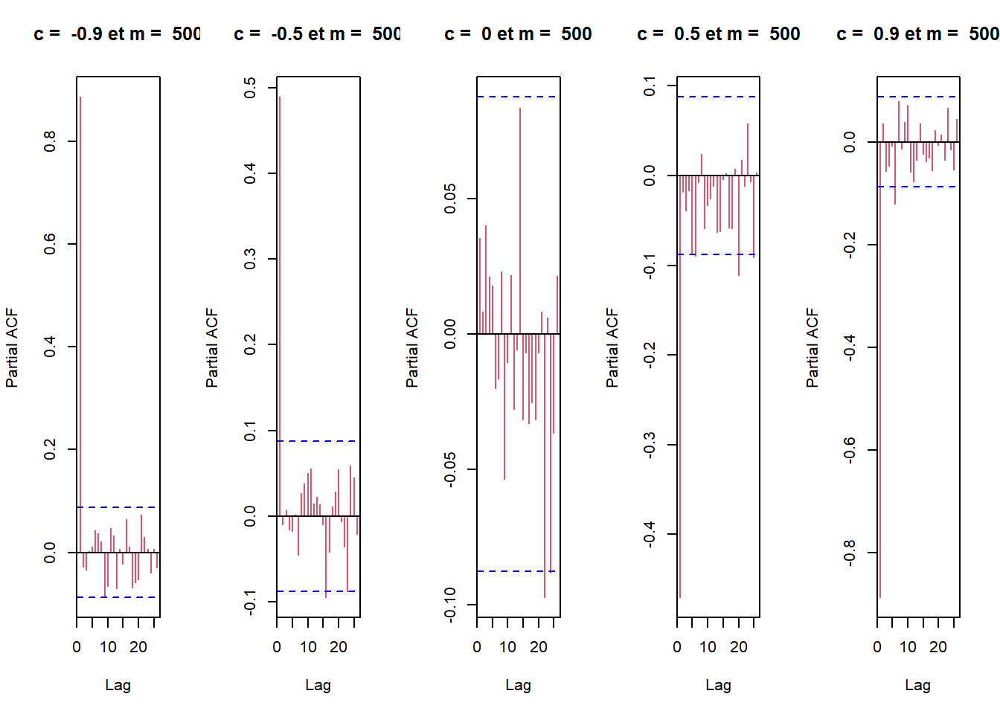
On reconnait alors les caractéristiques d’un AR(1) au vu des ACF et PACF. Et le cas de \(c=0\) apparait plus clairement comme celui d’un bruit blanc.
Le fichier champ.asc est disponible sur le web à l’adresse suivante http://www.math.sciences.univ-nantes.fr/~philippe/lecture/champ.asc
On note \((C_t)\) la série.
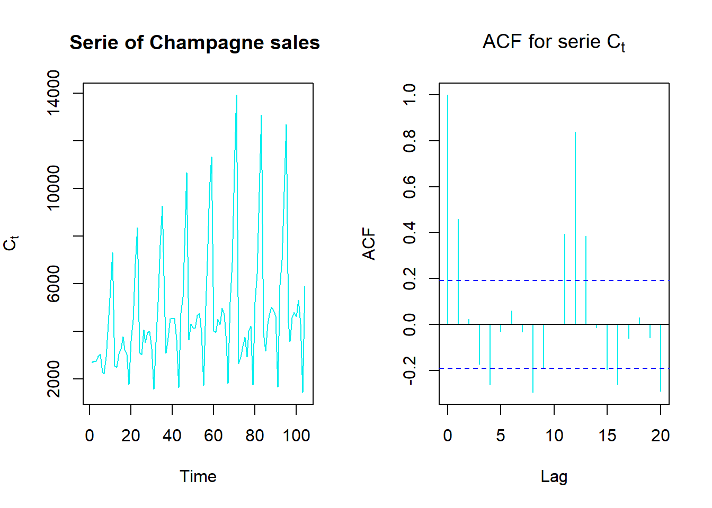
D’après les graphiques obtenus ainsi que l’analyse faite à l’exercice précédent, on constate clairement une série de type multplicatif (variance qui explose avec le temps) présentant une tendance linéaire et une saisonnalité (de période environ 12 peut-être).
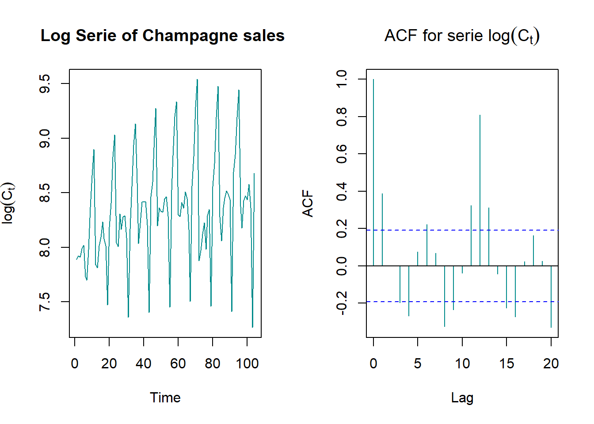
On peut observé que le passage au log à permis de contrer la croissance en \(t\) de la variance.
En effet, si on pose \(Y_t = t\varepsilon_t\), alors \(Var(Y_t) = t^2Var(\varepsilon_t)\).
Or, avec le passage au log, on aura que \(Var(log(Y_t)) = Var(log(t\varepsilon_t)) = Var(log(t)+log(\varepsilon_t)) = Var(log(\varepsilon_t))\)
On va donc simuler des séries de la forme suivante \[\begin{align}
\alpha t + \beta cos(\frac{2πt}{12}) + \gamma cos(\frac{2πt}{6}) + \beta' cos(\frac{2πt}{12}) + \gamma' cos(\frac{2πt}{6}) + \varepsilon_t
\end{align}\]
ut = function(n, a, b, c, d, e, a0 = 0){
t = 1:n
eps_t = rnorm(n)
u = a0 + a*t + b*cos(pi/6*t) + c*cos(pi/3*t) + d*sin(pi/6*t) + e*sin(pi/3*t) + eps_t
return(u)
}
# Simulations pour différentes valeurs de coefficients
n = rep(100,8)
alpha = rep(c(0.01, 0.05),4)
beta = rep(c(-1,1,0.1,2),2)
gamma = rep(c(-0.1,1,2,-0.5),2)
d = gamma
e = beta
a0 = rep(c(0, 7.5, 8, 8.5),2)
# On stocke les simulations
ut.vect = Vectorize(ut)
simu.res = ut.vect(n,alpha,beta,gamma,d,e,a0)On peut déjà constater que cette série à été construite dans l’optique de prendre les périodes que l’on peut détecter avec l’ACF autour du Lag 6 et du Lag 12 et qui sont adéquate à l’aspect de “double pics” présent dans notre série. Le terme \(\alpha\) est de son côté, présent pour prendre en compte la présence de la tendance linéaire.
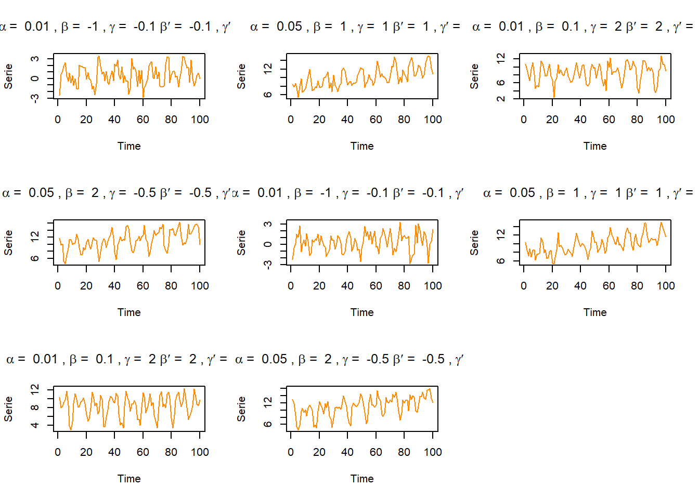
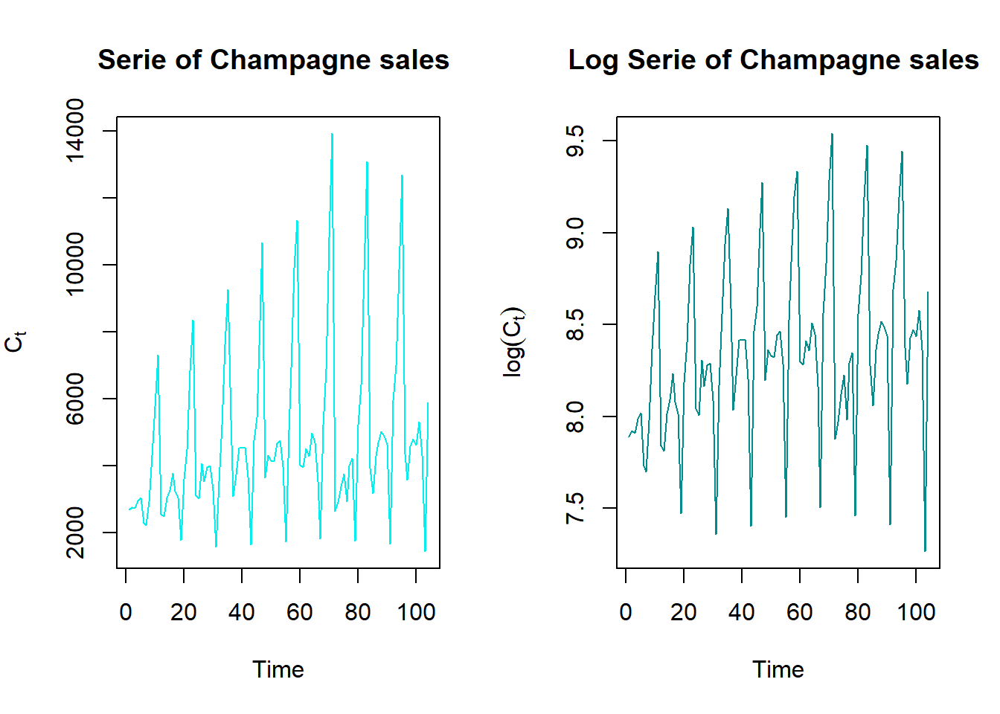
La série \(log(C_t)\) est la plus adaptée à l’halure des séries simulées car, pour les series simulées, on a pas la variance qui augmente comme pour\(C_t\).
Call:
lm(formula = log(Ct) ~ t + cos((pi/6) * t) + cos((pi/3) * t) +
sin((pi/6) * t) + sin((pi/3) * t))
Residuals:
Min 1Q Median 3Q Max
-0.76107 -0.13260 0.00618 0.18329 0.48198
Coefficients:
Estimate Std. Error t value Pr(>|t|)
(Intercept) 8.1452854 0.0512649 158.886 < 2e-16 ***
t 0.0043032 0.0008477 5.077 1.83e-06 ***
cos((pi/6) * t) 0.2760137 0.0360024 7.667 1.30e-11 ***
cos((pi/3) * t) -0.1698754 0.0361401 -4.700 8.49e-06 ***
sin((pi/6) * t) -0.2165525 0.0360024 -6.015 3.11e-08 ***
sin((pi/3) * t) -0.3990958 0.0357974 -11.149 < 2e-16 ***
---
Signif. codes: 0 '***' 0.001 '**' 0.01 '*' 0.05 '.' 0.1 ' ' 1
Residual standard error: 0.2592 on 98 degrees of freedom
Multiple R-squared: 0.7243, Adjusted R-squared: 0.7103
F-statistic: 51.5 on 5 and 98 DF, p-value: < 2.2e-16On constate une forte significativité de tout nos termes.
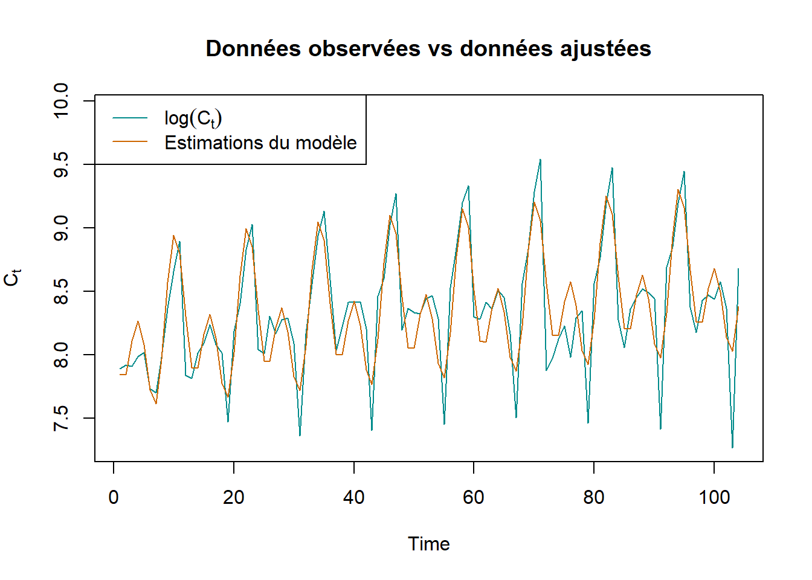
---
title: "Fiche 02"
author: "Clément Poupelin"
date: "2025-02-xx"
date-modified: "`r Sys.Date()`"
format:
html:
embed-resources: false
toc: true
code-fold: true
code-summary: "Show the code"
code-tools: true
toc-location: right
page-layout: article
code-overflow: wrap
toc: true
number-sections: false
editor: visual
categories: ["categorie 1", "cotegorie 2"]
image: ""
description: "Description"
---
# Intervenant.e.s
### Rédaction
- **Clément Poupelin**, [clementjc.poupelin\@gmail.com](mailto:clementjc.poupelin@gmail.com){.email}\
### Relecture
-
# Setup
:::: panel-tabset
## Packages
```{r, setup, warning=FALSE, message=FALSE}
# Données
library(dplyr) # manipulation des données
library(latex2exp)
# Plots
## ggplot
library(ggplot2)
library(gridExtra)
```
## Fonctions
::: panel-tabset
### Fonction 1
### Fonction 2
:::
## Seed
::::
# Données
# Analyse
::: callout-note
METTRE LES REMARQUES
:::
::: callout-warning
METTRE LES POINTS D'ATTENTION
:::
:::: success-header
::: success-icon
:::
Résultats
::::
::: success
METTRE LES CONCLUSIONS
:::
# Conclusion
# Session info
```{r}
sessioninfo::session_info(pkgs = "attached")
```
# **EXERCICE 1 : **
<br>
Nous étudions la différence entre une marche aléatoire et un signal linéaire bruité.
<br>
#### QUESTION 1 : Simuler dix marches aléatoires $(x_t)_t = \delta + x_{t-1} + w_t$ avec dérive de longueur $n = 100$, de paramètre $\delta = .01$ et de variance $\sigma^2_W = 1$ pour le bruit.
<br>
Si on pose que $x_0 = w_0$, on peut écrire notre marche aléatoire comme $x_t = \delta t + \sum_{i=0}^{t}w_i$
```{r}
# On pose nos paramètres
n = 100
delta = 0.01
# On définis notre fonction de marche aléatoire
random_walk = function(n, delta) {
w = rnorm(n)
drift = delta * seq(1, n)
x = drift + cumsum(w)
return(x)
}
# Générer dix marches aléatoires
nb = 10
sim = matrix(0, ncol = n, nrow = nb)
for (i in 1:nb) {
sim[i, ] = random_walk(n, delta)
}
```
```{r, echo=FALSE}
plot(1:n, sim[1, ], type = 'l',
main = TeX(paste("Simulation of", nb,"Randoms Walks with drift $delta$ = ", delta)),
ylab = "Random Walk",
xlab = "Time",
ylim = c(min(sim), max(sim)),
col = 'green')
for (i in 2:nb) {
lines(1:n, sim[i, ], col = 'green')
}
```
#### QUESTION 2 : Estimer le modèle de régression linéaire $x_t = \beta_t + w_t$
<br>
```{r}
list=1:n
l = c()
for (i in 1:nb){
mod = lm(sim[i,] ~ list + 0)
# +0 pour ne pas faire de modèle avec constante
l[i] = mod$coefficients
}
```
<br>
#### QUESTION 3 : Représenter sur un même graphique les dix droites estimées et la tendance moyenne théorique $\delta_t = .01t$
<br>
```{r, echo=FALSE}
plot( l[1]*list, type = "l", col = 'orange',
main = "Graphe of the estimations",
ylim = c(-10, 10),
xlab = 'Time',
ylab = "Estimated values")
for (i in 2:nb) {
lines(list * l[i], col = 'orange')
}
lines(0.01*list, lty = 2, lwd = 3, col = 'red')
legend("topleft",
legend = TeX("Theoritical trend $delta_t$ = .01t"),
col = 'red',
lty = 2)
```
<br>
#### QUESTION 4 : Simuler dix séries $(x_t)_t$ de la forme $x_t = \delta_t + w_t$ (tendance+bruit blanc) de longueur $n = 100$, de paramètre $\delta = .01$ et de variance $\sigma^2_W = 1$
<br>
```{r}
# On définis notre signal linéaire bruité
noisy_serie = function(n, delta) {
w = rnorm(n, sd = 1)
drift = delta * seq(1, n)
x = drift + w
return(x)
}
# Générer dix séries tendance + bruit
sim2 = matrix(0, ncol = n, nrow = nb)
for (i in 1:nb) {
sim2[i, ] = noisy_serie(n, delta)
}
```
```{r, echo=FALSE}
plot(1:n, sim2[1, ], type = "l",
xlab = "Time",
ylab = "Noisy serie",
main = paste("Simulation of", nb,"linear noisy series"),
ylim = c(min(sim2), max(sim2)),
col = "blue")
for (i in 2:nb) {
lines(1:n, sim2[i, ], col = "blue")
}
```
<br>
#### QUESTION 5 : Estimer le modèle de régression linéaire $x_t = \beta_t + w_t$
<br>
```{r}
l2 = c()
for (i in 1:nb){
mod2 = lm(sim2[i,] ~ list + 0)
l2[i] = mod2$coefficients
}
```
<br>
#### QUESTION 6 : Représenter sur un même graphique les dix droites estimées et la tendance théorique $\delta_t = .01t$
<br>
```{r, echo=FALSE}
plot( l2[1]*list, type = "l", col = 'orange',
main = "Graphe of the estimations",
ylim = c(-1.2, 1.2),
xlab = 'Time',
ylab = "Estimated values")
for (i in 2:nb) {
lines(list * l2[i], col = 'orange')
}
lines(0.01*list, lty = 2, lwd = 3, col = 'red')
legend("topleft",
legend = TeX("Theoritical trend $delta_t$ = .01t"),
col = 'red',
lty = 2)
```
<br>
#### QUESTION 7 : Commenter les résultats
<br>
La tendance théorique (le drift) est mieux estimée par régression dans le cas d'un signal bruité que celui de la marche aléatoire.
Cela peut s'explique par le fait que, dans le cas de la marche aléatoire, la variance de $x_t$ croît linéairement avec le temps. En effet,
$Var(x_t) = Var( \delta t + \sum_{i=0}^{t}w_i) = Var( \sum_{i=0}^{t}w_i)=\sum_{i=0}^{t}Var(w_i) = \sum_{i=0}^{t}\sigma^2_w=t\sigma^2_w$
Cela fait donc défaut à l'hypothèse d'homoscédacité cruciale pour la régression linéaire
Par contre, du côté du signal bruite on conserve l'homoscédacité avec le cas très idéal du bruit iid et gaussien.
<br>
# **EXERCICE 2 : **
<br>
#### QUESTION 1 : Écrire une fonction qui retourne une série simulée de la forme $X_j = a cos(ω_j) + bj + \varepsilon_j$ où $(\varepsilon_n)$ un bruit blanc gaussien centré et de variance 1.
<br>
Les paramètres d’entrée de la fonction sont $n$, $a$, $b$, $w$ et la sortie est une série temporelle. Pour cela, on utilise la fonction ts() qui transforme nos points générés en une série temporelle.
```{r}
X_j = function(n, a, b, w) {
eps = rnorm(n)
x = a*cos(w*seq(1, n) ) + b* seq(1, n) +eps
return(ts(x))
}
```
Maintenant, on fixe $n = 100$ puis $n = 500$
```{r}
n = c(100, 500)
```
Puis on pose les paramètres qui nous serons utiles par la suite
```{r}
a = c(0, 2)
b = c(0.01, 0)
w = c(2*pi, pi/6)
#en 2*pi, w n'aura pas d'influence si on voulait enlever la condition a = 0
```
<br>
#### QUESTION 2 : Pour $a = 0$ et $b = .01$, simuler une trajectoire, puis représenter
<br>
```{r}
# Pour n = 100
sim1_X_j_100 = X_j(n[1], a[1], b[1], w[1])
# Pour n = 500
sim1_X_j_500 = X_j(n[2], a[1], b[1], w[1])
```
<br>
#### 2-1 : la série et sa suite d’auto-corrélations empiriques
<br>
```{r, echo=FALSE}
par(mfrow=c(1, 2))
plot(sim1_X_j_100, col = 2,
main = TeX(paste("Série $X_j$ pour n = ", n[1])),
xlab = "Time",
ylab = TeX("$X_t$"))
acf(sim1_X_j_100, col = 2)
par(mfrow=c(1, 1))
```
```{r, echo=FALSE}
par(mfrow=c(1, 2))
plot(sim1_X_j_500, col = 2,
main = TeX(paste("Série $X_j$ pour n = ", n[2])),
xlab = "Time",
ylab = TeX("$X_t$"))
acf(sim1_X_j_500, col = 2)
par(mfrow=c(1, 1))
```
<br>
#### 2-2 : la série $X_n − X_{n−1}$ et sa suite des auto-corrélations empiriques
<br>
```{r}
sim1_X_j_100_diff = diff(sim1_X_j_100, lag = 1)
sim1_X_j_500_diff = diff(sim1_X_j_500, lag = 1)
```
```{r, echo=FALSE}
par(mfrow=c(1, 2))
plot(sim1_X_j_100_diff, col = 2,
main = TeX(paste("Série $X_j - X_{j-1}$ pour n = ", n[1])),
xlab = "Time",
ylab = TeX("$X_t - X_{t-1}$"))
acf(sim1_X_j_100_diff, col = 2)
par(mfrow=c(1, 1))
```
```{r, echo=FALSE}
par(mfrow=c(1, 2))
plot(sim1_X_j_500_diff, col = 2,
main = TeX(paste("Série $X_j - X_{j-1}$ pour n = ", n[2])),
xlab = "Time",
ylab = TeX("$X_t - X_{t-1}$"))
acf(sim1_X_j_500_diff, col = 2)
par(mfrow=c(1, 1))
```
<br>
#### QUESTION 3 : Pour $b = 0$, $a = 2$ et $w = \frac{\pi}{6}$, simuler une trajectoire, puis représenter
<br>
```{r}
# Pour n = 100
sim2_X_j_100 = X_j(n[1], a[2], b[2], w[2])
# Pour n = 500
sim2_X_j_500 = X_j(n[2], a[2], b[2], w[2])
```
<br>
#### 3-1 : la série et sa suite des auto-corrélations empiriques
<br>
```{r, echo=FALSE}
par(mfrow=c(1, 2))
plot(sim2_X_j_100, col = 2,
main = TeX(paste("Série $X_j$ pour n = ", n[1])),
xlab = "Time",
ylab = TeX("$X_t$"))
acf(sim2_X_j_100, col = 2)
par(mfrow=c(1, 1))
```
```{r, echo=FALSE}
par(mfrow=c(1, 2))
plot(sim2_X_j_500, col = 2,
main = TeX(paste("Série $X_j$ pour n = ", n[2])),
xlab = "Time",
ylab = TeX("$X_t$"))
acf(sim2_X_j_500, col = 2)
par(mfrow=c(1, 1))
```
<br>
#### 3-2 : la série $X_n − X_{n−12}$ et sa suite des auto-corrélations empiriques
<br>
```{r}
sim2_X_j_100_diff = diff(sim2_X_j_100, lag = 12)
sim2_X_j_500_diff = diff(sim2_X_j_500, lag = 12)
```
```{r, echo=FALSE}
par(mfrow=c(1, 2))
plot(sim2_X_j_100_diff, col = 2,
main = TeX(paste("Série $X_j - X_{j-12}$ pour n = ", n[1])),
xlab = "Time",
ylab = TeX("$X_t - X_{t-12}$"))
acf(sim2_X_j_100_diff, col = 2)
par(mfrow=c(1, 1))
```
```{r, echo=FALSE}
par(mfrow=c(1, 2))
plot(sim2_X_j_500_diff, col = 2,
main = TeX(paste("Série $X_j - X_{j-12}$ pour n = ", n[2])),
xlab = "Time",
ylab = TeX("$X_t - X_{t-12}$"))
acf(sim2_X_j_500_diff, col = 2)
par(mfrow=c(1, 1))
```
Pour conclure, on peut constater qu'en grandissant l'échantillon, la tendance et la saisonnalité ressortent d'avantage et influencent nos autocorrélation. On ne pourra donc pas considérer les séries comme stationnaires.
Mais, l'opération de différenciation peut permettre de résoudre ce problème d'autocorrélation quand celle ci est adaptée à la "perturbation"(tendance ou saison) de notre série.
Pour visualiser cela, on peut effecuer les calculs.
Dans le cas de la série $X_j = 0.01j +\varepsilon_j$ Où il reste l'effet de tendance,
\begin{align*}
X_j - X_{j-1} &= 0.01j +\varepsilon_j - 0.01(j-1) -\varepsilon_{j-1}\\
&= 0.01j - 0.01j - 0.01 + \varepsilon_j - \varepsilon_{j-1}\\
&= -0.01 +\varepsilon_j - \varepsilon_{j-1}\\
\end{align*}
On a bien une disparition de la tendance.
Dans le cas de la série $X_j = 2cos(\frac{\pi}{6}j) + \varepsilon_j$ Où il reste l'effet de saison,
\begin{align*}
X_j - X_{j-12} &= 2cos(\frac{\pi}{6}j) +\varepsilon_j - 2cos(\frac{\pi}{6}(j-12)) -\varepsilon_{j-12}\\
&= 2cos(\frac{\pi}{6}j) +\varepsilon_j - 2cos(\frac{\pi}{6}j-\frac{\pi}{6}12) -\varepsilon_{j-12}\\
&= 2cos(\frac{\pi}{6}j) +\varepsilon_j - 2cos(\frac{\pi}{6}j-2\pi) -\varepsilon_{j-12}\\
&= 2cos(\frac{\pi}{6}j) +\varepsilon_j - 2(cos(\frac{\pi}{6}j)cos(2\pi) - sin(\frac{\pi}{6}j)sin(2\pi)) -\varepsilon_{j-12}\\
&= 2cos(\frac{\pi}{6}j) +\varepsilon_j - 2(cos(\frac{\pi}{6}j) - 0) -\varepsilon_{j-12}\\
&= \varepsilon_j -\varepsilon_{j-12}\\
\end{align*}
On a bien une disparition de la saison.
<br>
On a donc qu'une différentiation d'ordre 1 permettra d'enlever la tendance et une différentiation d'ordre $s$ permettra d'enlever une saison de période $s$.
<br>
# **EXERCICE 3 : **
<br>
#### QUESTION 1 : Ecrire une fonction pour simuler des trajectoires de processus défini par l’équation de récurrence $X_m + cX_{m−1} = \varepsilon_m$ où $(\varepsilon_m)$ est une suite de variables aléatoires centrées iid.
<br>
**Indication** : Pour obtenir une série de longueur $m$, simuler $m+ 100$ valeurs et supprimer les
100 premières valeurs pour atténuer l’effet de l’initialisation. Vous pouvez utiliser la fonction filter.
```{r}
xt = function(m, c) {
eps = rnorm(m + 100)
x = rep(NA, m + 100)
# On suppose pour notre condition initial
x[1] = eps[1]
for (i in (2:(m + 100))) {
x[i] = eps[i] - c * x[i - 1]
}
x_final = x[101:(m + 100)]
return(ts(x_final))
}
```
<br>
#### QUESTION 2 : Pour $|c| = 0, .5, .9$, tracer une trajectoire simulée et sa suite des auto-corrélations empiriques
<br>
```{r}
# On pose nos paramètres
m = 500
c = c(-0.9, -0.5, 0, 0.5, 0.9)
```
```{r, echo=FALSE}
par(mfrow=c(1, 5))
for (i in c){
plot(xt(m, i), col = 2, main = paste("c = ", i, "et m = ", m), ylim = c(-8, 8))
}
par(mfrow=c(1, 1))
par(mfrow=c(1, 5))
for (i in c){
acf(xt(m, i), col = 2, main = paste("c = ", i, "et m = ", m))
}
par(mfrow=c(1, 1))
```
<br>
#### QUESTION 3 : Commenter les résultats
<br>
On remarque qu'au moment où nos paramètres sont proche de $1$ ou $-1$, nos autocorrélations sont forte et notre série perd en stationnarité.
En effet, on remarque que le processus est un AR(1) avec son acf qui décroit exponentiellement et la stationnarité se perd quand $|c| \longrightarrow 1$.
On remarque également que, qand $c=0$, on a un bruit blanc.
<br>
#### **BONUS**
<br>
En Complément de ces informations, on peut aussi s'interesser au PACF
```{r, echo=FALSE}
par(mfrow=c(1, 5))
for (i in c){
acf(xt(m, i), col = 2, main = paste("c = ", i, "et m = ", m))
}
par(mfrow=c(1, 1))
par(mfrow=c(1, 5))
for (i in c){
pacf(xt(m, i), col = 2, main = paste("c = ", i, "et m = ", m))
}
par(mfrow=c(1, 1))
```
On reconnait alors les caractéristiques d'un AR(1) au vu des ACF et PACF. Et le cas de $c=0$ apparait plus clairement comme celui d'un bruit blanc.
<br>
# **EXERCICE 4 : **
<br>
Le fichier champ.asc est disponible sur le web à l’adresse suivante
http://www.math.sciences.univ-nantes.fr/~philippe/lecture/champ.asc
On note $(C_t)$ la série.
```{r}
url = "http://www.math.sciences.univ-nantes.fr/~philippe/lecture/champ.asc"
data = read.csv(url)
Ct = ts(data)
```
<br>
#### QUESTION 1 : Tracer la série $(C_t)$ et sa suite des auto-corrélations empiriques
<br>
```{r, echo=FALSE}
par(mfrow=c(1, 2))
plot(Ct, ylab = TeX("$C_t$"), xlab = "Time", main = "Serie of Champagne sales ", col = "cyan2")
acf(Ct, main = TeX("ACF for serie $C_t$"), col = "cyan2")
par(mfrow=c(1, 1))
```
<br>
#### QUESTION 2 : En utilisant les résultats de l’exercice précédent, peut-on détecter la présence d’une fonction périodique ou d’une tendance dans cette série.
<br>
D'après les graphiques obtenus ainsi que l'analyse faite à l'exercice précédent, on constate clairement une série de type multplicatif (variance qui explose avec le temps) présentant une tendance linéaire et une saisonnalité (de période environ 12 peut-être).
<br>
#### QUESTION 3 : Tracer la série $(log(Ct))$ et sa suite des auto-corrélations empiriques
<br>
```{r}
lCt = log(Ct)
```
```{r, echo=FALSE}
par(mfrow=c(1, 2))
plot(lCt, ylab = TeX("$log(C_t)$"), xlab = "Time", main = "Log Serie of Champagne sales ", col = "cyan4")
acf(lCt, main = TeX("ACF for serie $log(C_t)$"), col = "cyan4")
par(mfrow=c(1, 1))
```
On peut observé que le passage au log à permis de contrer la croissance en $t$ de la variance.
<br>
En effet, si on pose $Y_t = t\varepsilon_t$, alors $Var(Y_t) = t^2Var(\varepsilon_t)$.
<br>
Or, avec le passage au log, on aura que
$Var(log(Y_t)) = Var(log(t\varepsilon_t)) = Var(log(t)+log(\varepsilon_t)) = Var(log(\varepsilon_t))$
<br>
#### QUESTION 4 : Pour différentes valeurs des paramètres $(\alpha, \beta, \gamma)$, simuler les séries suivantes de longueur 100 où $(\varepsilon_t)$ est une suite de variables aléatoires i.i.d. $\mathcal{N}_{(0, 1)}$
<br>
On va donc simuler des séries de la forme suivante
\begin{align}
\alpha t + \beta cos(\frac{2πt}{12}) + \gamma cos(\frac{2πt}{6}) + \beta' cos(\frac{2πt}{12}) + \gamma' cos(\frac{2πt}{6}) + \varepsilon_t
\end{align}
```{r}
ut = function(n, a, b, c, d, e, a0 = 0){
t = 1:n
eps_t = rnorm(n)
u = a0 + a*t + b*cos(pi/6*t) + c*cos(pi/3*t) + d*sin(pi/6*t) + e*sin(pi/3*t) + eps_t
return(u)
}
# Simulations pour différentes valeurs de coefficients
n = rep(100,8)
alpha = rep(c(0.01, 0.05),4)
beta = rep(c(-1,1,0.1,2),2)
gamma = rep(c(-0.1,1,2,-0.5),2)
d = gamma
e = beta
a0 = rep(c(0, 7.5, 8, 8.5),2)
# On stocke les simulations
ut.vect = Vectorize(ut)
simu.res = ut.vect(n,alpha,beta,gamma,d,e,a0)
```
On peut déjà constater que cette série à été construite dans l'optique de prendre les périodes que l'on peut détecter avec l'ACF autour du Lag 6 et du Lag 12 et qui sont adéquate à l'aspect de "double pics" présent dans notre série. Le terme $\alpha$ est de son côté, présent pour prendre en compte la présence de la tendance linéaire.
<br>
#### QUESTION 5 : Comparer l’allure des séries simulées avec la série des ventes de champagne et la série $(log(Ct))$.
<br>
```{r, echo=FALSE}
par(mfrow=c(3,3))
for (i in 1:length(alpha)) {
plot(simu.res[,i], type = "l",
col = "darkorange",
xlab = "Time",
ylab = "Serie" ,
main = TeX(paste("$alpha$ = ", alpha[i], ", $beta$ = ", beta[i], ", $gamma$ = ", gamma[i], "$beta'$ = ", d[i],", $gamma'$ = ", e[i]))
)
# title(main=TeX(paste("$alpha$ = ", alpha[i], ", $beta$ = ", beta[i], ", $gamma$ = ", gamma[i],"\n",sep="")), cex.main=1)
#title(main=TeX(paste("\n","$beta'$ = ", d[i],", $gamma'$ = ", e[i],sep="")), cex.main=1)
}
par(mfrow=c(1,1))
```
```{r, echo=FALSE}
par(mfrow=c(1, 2))
plot(Ct, ylab = TeX("$C_t$"), xlab = "Time", main = "Serie of Champagne sales ", col = "cyan2")
plot(lCt, ylab = TeX("$log(C_t)$"), xlab = "Time", main = "Log Serie of Champagne sales ", col = "cyan4")
par(mfrow=c(1, 1))
```
<br>
#### QUESTION 6 : Pour laquelle des deux séries $((Ct))$ $(log(Ct))$, le modèle défini en question 4 vous semble le plus pertinent.
<br>
La série $log(C_t)$ est la plus adaptée à l'halure des séries simulées car, pour les series simulées, on a pas la variance qui augmente comme pour$C_t$.
<br>
#### QUESTION 7 : Sur cette série, calculer les estimateurs de $(\alpha, \beta, \gamma)$ par la méthode des moindres carrés. Que peut-on dire de la qualité du modèle. Peut on modéliser la série des résidus par un bruit blanc?
<br>
```{r}
#construisons un modèle de regression
t = seq(1,length(Ct))
model = lm(log(Ct) ~ t + cos((pi/6)*t) + cos((pi/3)*t) + sin((pi/6)*t) + sin((pi/3)*t))
summary(model)
```
On constate une forte significativité de tout nos termes.
```{r, echo=FALSE}
plot(log(Ct), type = "l", col = "cyan4",
xlab = "Time",
ylab = TeX("$C_t$"),
ylim=range(log(Ct))+c(0,0.4))
lines(model$fitted.values, col = "darkorange3")
# model$fitted.values sont les valeurs estimées de notre série au cours du temps
title("Données observées vs données ajustées")
legend(
"topleft",
legend = c(TeX("$log(C_t)$"), "Estimations du modèle"),
col = c("cyan4", "darkorange3"),
lty = c("solid", "solid")
)
```
```{r, include=FALSE}
# Pour un complément d'information, on peut également regarder la PACF de nos séries $C_t$ et $log(C_t)$
par(mfrow=c(1, 2))
pacf(Ct, main = TeX("PACF for serie $(C_t)$"), col = "cyan2")
pacf(lCt, main = TeX("PACF for serie $log(C_t)$"), col = "cyan4")
par(mfrow=c(1, 1))
```